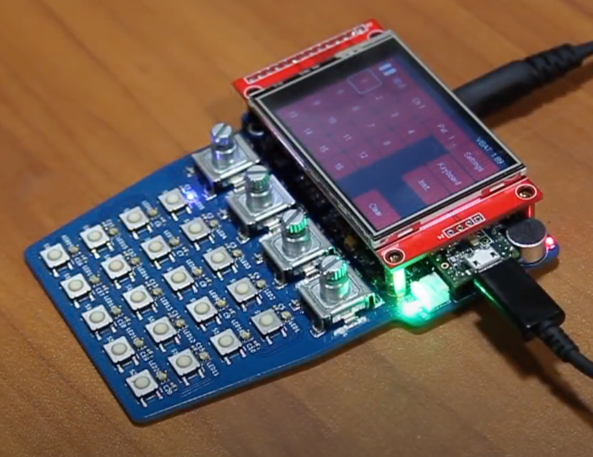

Handheld audio sequencer. PO style.

This project aims to fill a void in open source handheld musical instruments. Being open source and built on a highly capable and extensible platform, hackers are free to modify, create, and remix this design for the common good. I’m very open to suggestions, patches, etc.
All DB data
- Name: Teensy Beats Shield
- Author: Chris Miller
- Link: https://hackaday.io/project/161127-teensy-beats-shield
- Demo: https://www.youtube.com/watch?v=HSS_-nJva-s
- Picture: ../pics/teensy-beats-shield.jpg
- Description: Handheld audio sequencer. PO style.
- Notes: This project aims to fill a void in open source handheld musical instruments. Being open source and built on a highly capable and extensible platform, hackers are free to modify, create, and remix this design for the common good. I’m very open to suggestions, patches, etc.
- Artifacts: {“Schematic”=>true}{“PCB”=>true}{“BOM”=>true}{“FW”=>true}{“Docs”=>false}{“Enclosure”=>false}
- Tags: TeensySequencerDigital
- Level: Advanced
{kind=link}